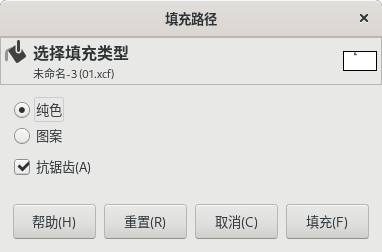

路径工具
快捷键：B
路径工具及其工具选项
路径工具( )又称为Bézier曲线工具，可以用矢量曲线创建极为复杂和极为精准的选区。您可以编辑创建的曲线，用创建的曲线绘画，可以保存、导入、导出曲线。
{kind=link}
路径工具的操作方法：
路径工具的操作方法并不简单，很多刚入门的人都需要花一些精力才能掌握。但对于那些经常使用平面软件的人(尤其是在平面相关行业里工作的人)来说，路径工具是必须掌握的绘图工具。相对来说，矢量软件中路径工具的使用更频繁也更广泛，比如 Inkscape、CorelDRAW、Illustraor 。
因为路径的操作方法比较复杂，我们这里只介绍最基本的操作：
选择 路径工具 后，在图像上点击并向下拖动一段距离，松开鼠标，此时第一个节点已经创建好了。
(如果点击后不拖动，表示创建的节点是直线节点，不是曲线节点)
在右边另一个位置点击并向下拖动一段距离，松开鼠标，此时第二个节点已经创建好了；并且，两个节点之间有一条S形曲线连接。
在第一个节点上方点击并向下拖一段距离，松开鼠标，此时第三个节点已经创建好了；并且，第二个节点和第三个节点有一条S形曲线连接。到这里，我们路径创建结束。
按住Alt键点击曲线并拖动，可以移动路径的位置。
鼠标直接点击其中一个节点，可以移动一个节点的位置；节点移动会导致路径形状同时发生变化。
鼠标点击任何一个节点，都会显示一条纵向线段，两端各有一个方块，线段+方块是节点的控制手柄，您可以点击方块来调整控制手柄，来修改被该节点所影响的那部分路径的形状。
直接点击方块，只能修改单向手柄；按Shift键并点击方块，可以限制一对手柄呈对称排列。
按Ctrl+Shift点击方块，可以删除该手柄(手柄可以不成对出现，一个节点最多两个手柄)。
如果某个节点只有一个手柄或没有手柄，按Ctrl点击该节点并拖动一段距离，可以创建该节点的新手柄(编辑模式，且未勾选“多边形”)。
切换其它工具时，路径会消失不见。可以在路径堆栈中点击路径缩略图左侧，显示眼睛图标，这表示让选中的路径可见。之后就可以看到显示的路径。
文件保存成XCF格式时，会带路径一起保存，以后打开文件，可以继续编辑路径。
继续编辑路径的方法是让路径可见后，点击路径，路径会显示节点，且显示当前激活节点的控制手柄。此时可以点击需要的节点或手柄对路径进行编辑。
在路径激活状态下按Ctrl键并点击第一个节点，可以关闭路径。
编辑路径的过程中，如果路径未关闭，那么点击第一个节点或最后一个节点，然后点击路径线条以外的区域，可以扩展路径。
直接点击某段路径线条，可以拖动该段线条，改变路径局部的形状。
按Shift键点击某段路径线条，可以拖动该段线条及与该段线条相邻的两段线条，改变路径局部的形状。
按Ctrl键点击路径线条，可以在点击位置添加新节点。
按Ctrl+Shift键点击某个节点，可以删除该节点。
按Ctrl+Shift键点击某段线条，可以删除该段线条(路径被断开)。
(点击可查看原图)
{kind=link}
工具选项
这里提供一些细节控制。
(没找到工具选项？请参考工具箱→矩形选择工具→如何显示工具选项)
编辑模式：编辑路径的过程中，这里可以确定编辑的方式。
设计：设计模式是最大限度的模式，您可以实现所有的路径功能：创建新路径，编辑现有路径等(有些功能通过辅助键Ctrl和Alt实现)。
编辑：编辑模式下您只能修改现有路径，不能创建新路径。
移动：移动模式下，您只能移动路径，不能修改路径，也不能创建新路径。
多边形：勾选此选项后，只能创建直线段，没有任何控制手柄，也不能创建手柄。如果想对已有的节点创建控制手柄，需要取消勾选此项。
从路径创建选区：点击后，会根据当前活动路径创建选区。如果路径是未关闭路径，GIMP会用直线对其进行关闭。此按钮支持辅助键：
按Shift点击，会添加到现有选区，相当于并集；
按Ctrl点击，会从现有选区减去由路径创建的选区，相当于差集；
按Shift+Ctrl点击，会保留二者共同的区域，相当于交集；
填充路径：GIMP可以填充选区，也可以直接填充路径；未封闭路径，GIMP会用直线连接始点于终点进行封闭。
纯色：使用前景色填充；
图案：使用当前活动图案填充；
抗锯齿：填充范围的边缘启用抗锯齿效果；
填充路径
勾画路径：勾画这个词，在其它软件中也叫做描边。相关参数的描述，请参考菜单→编辑→勾画路径。
工具选项窗口底部有四个按钮，一些常用的参数可以保存起来供以后使用：
保存工具预设：把当前的参数保存起来，以后可以直接调用；可以保存多个；保存时可以命名。
恢复工具预设：调用以前保存的参数。
删除工具预设：删除以前保存的参数。
重置到默认值：把当前参数重置到GIMP默认值。
扩展说明
本质上，GIMP是一个位图程序，所以，GIMP对路径的创建和编辑能力有限，远不如矢量图程序强大，这也是为什么photoshop和illustrator两者都存在的原因：photoshop主要用于位图，Illustrator主要用于矢量图。只不过为了操作便捷，专攻位图的GIMP也支持一部分矢量操作，典型的就是路径工具；photoshop也是同理。
在开源领域，也有一个可以免费商用且非常强大的矢量图程序，就是inkscape，其在开源软件中的地位类同于illustrator。
并且，GIMP支持直接导入inkscape创建的svg路径，即，您在inkscape中创建好路径，保存成svg文件，然后就可以在GIMP中直接导入inkscape创建好的svg文件。这样，您就可以直接利用inkscape强大的矢量特性。
关于inkscape的操作方法，请参考《Inkscape 操作指南》 。
- GIMP中如何导入inkscape路径：
先把inkscape中创建的路径保存成svg文件；
在GIMP中，点击菜单 窗口→可停靠对话框→路径 打开路径面板，在面板中空白处点击鼠标右键，在弹出菜单中选择底部的 导入路径，选择之前保存的svg文件，然后点击对话框右下角的 打开 按钮，即可导入路径；
路径导入后默认为不可见，这种情况下，您在画布上是看不到路径的，只能在路径面板的缩略图上看到。如果想在画布上显示路径，需要激活路径面板中路径缩略图左侧的眼睛图标即可；
如果缩略图上也看不到路径，那么通常是路径的位置偏移导致的，这种情况下即使激活了眼睛图标，也无法在画布上看到路径；解决方法是按下面的方法把路径位置移动到画布中心即可；
激活路径缩略图左侧的眼睛图标后，可以大幅度缩小视图，就会看到画布范围的路径，用路径工具把路径移到画布中心位置。
画布范围外的路径
(上图中白色矩形是画布范围，下面的五角星、红色方框、椭圆形三个是导入的inkscape路径。右侧路径面板中，三个眼睛图标都已经激活；路径缩略图只有五角星显示了一部分，另外两个路径在缩略中没有显示，没显示的原因是路径的位置已经位于画布区域之外)